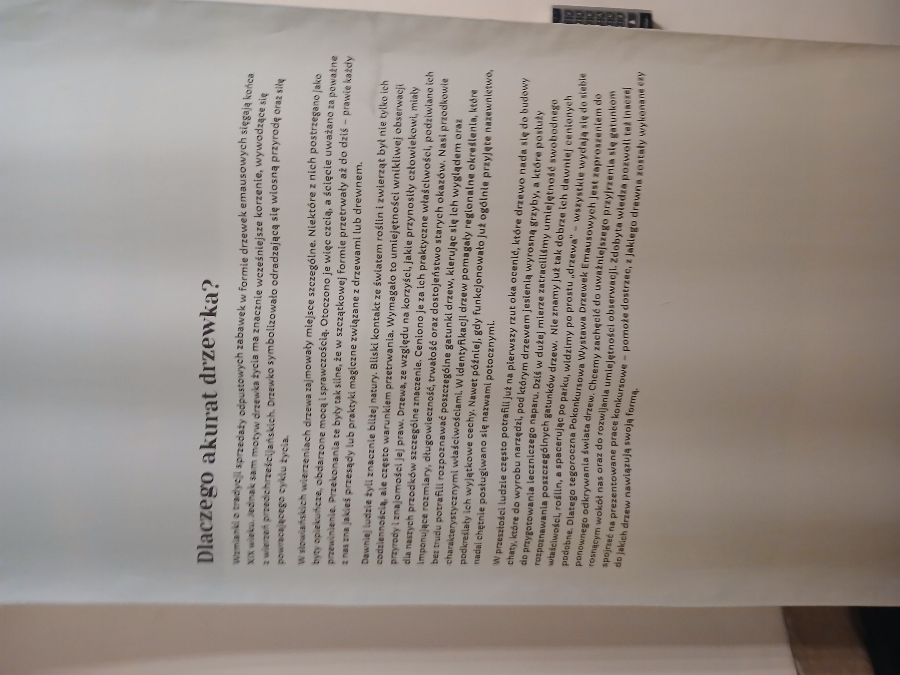

Wielkanoc to najważniejsze i najstarsze święto chrześcijańskie upamiętniające zmartwychwstanie Jezusa Chrystusa, symbolizujące zwycięstwo życia nad śmiercią oraz dobra nad złem. Obchodzi się je w niedzielę po pierwszej wiosennej pełni księżyca. Święto oznacza radość, nadzieję oraz początek nowego życia.